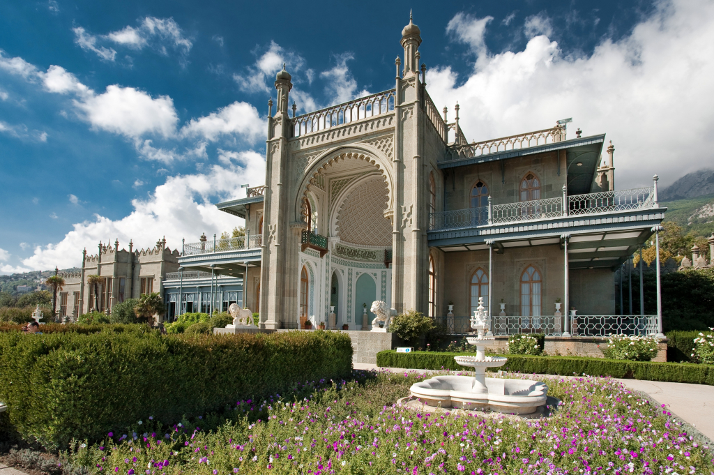

Vatan

Ханский дворец
Резиденция крымских ханов
Ханский дворец – это жилище большой ханской семьи, а также сосредоточение государственной власти, порог
правосудия и место, где принимались решения, влияющие на судьбы всей восточной Европы. На протяжении двух с
половиной столетий здесь рождались, жили, правили и умирали представители ханской династии Гераев. Дворец
являлся не личным имуществом того или иного хана, а фамильным достоянием всей правящей династии.

Судакская крепость
Опорный пункт генуэзцев
Величественно возвышается на берегу Черного моря Генуэзская крепость в Судаке. Это исторический памятник и
символ богатой культурной наследственности Крыма. Её монументальные стены, бесстрашно сопротивлявшиеся
времени и природным силам, веками привлекали внимание путешественников, исследователей и любителей истории.
Воронцовский дворец
Дворцовый
комплекс графа М.С,
Воронцова
Воронцо́вский дворе́ц расположен в г. Алупке (Крым) у подножия горы Ай-Петри. Построен из диабаза, который
добывался неподалёку. С 1956 года во дворце находится музей. При Воронцовском дворце находится парк —
памятник садово-паркового искусства. С декабря 1824 года по апрель 1851-го Воронцовский парк в Алупке
создавал талантливый немецкий садовод-ботаник, главный садовник Южного берега Крыма — Карл Антонович Кебах.

Выйти
Хочу посетить
Посетил
...
9